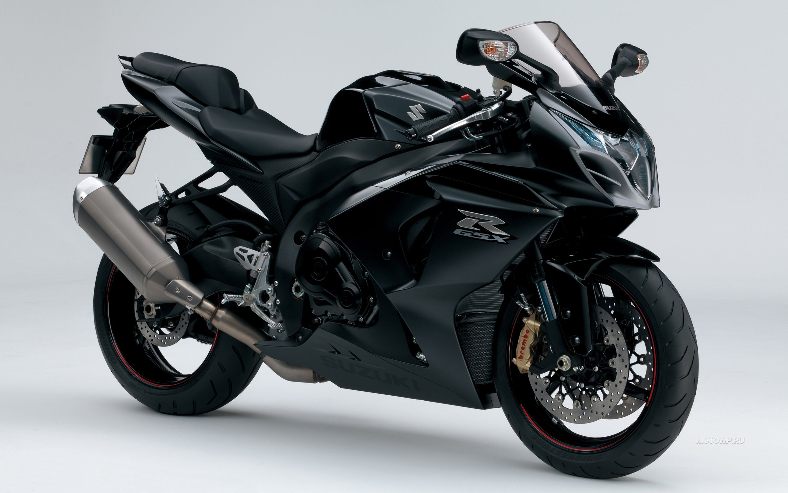

Мотоцикл - это тип транспортного средства,
состоящий из двух колес и оборудованного двигателем внутреннего
сгорания. Мотоциклы обычно предназначены для перевозки одного или двух человек, и их основное
преимущество заключается в высокой маневренности и способности передвигаться с большой скоростью. Они могут быть использованы как средство передвижения в повседневной жизни,
рекреационном или спортивном целях. Мотоциклы различаются по своей конструкции, мощности двигателя, типу использования (шоссейные, кроссовые, туристические и т. д.) и могут быть предназначены для разных типов дорожного покрытия. Некоторые мотоциклы также могут иметь прицепы для перевозки грузов или дополнительного оборудования.
